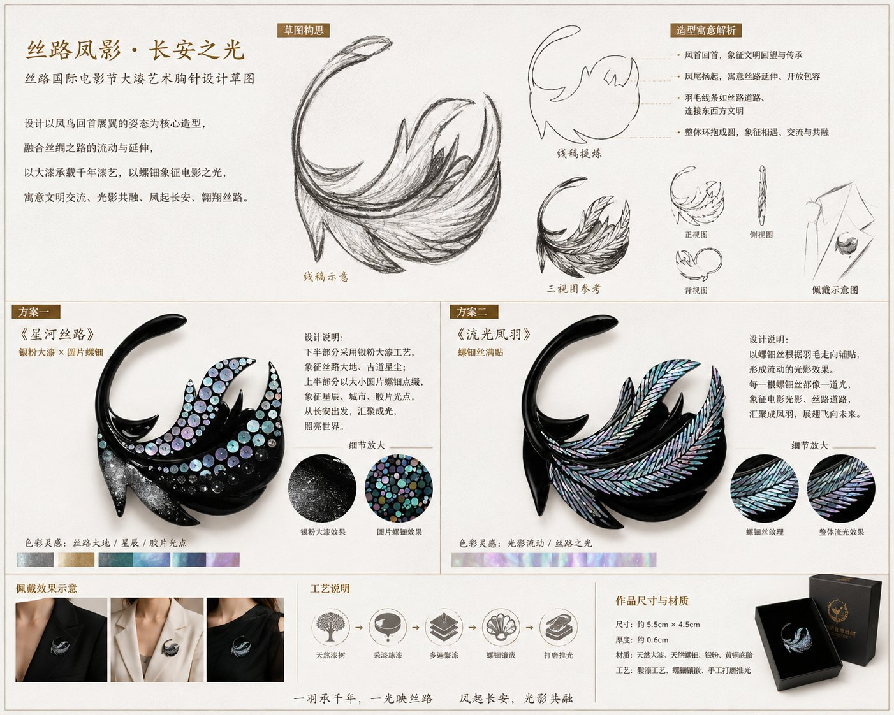
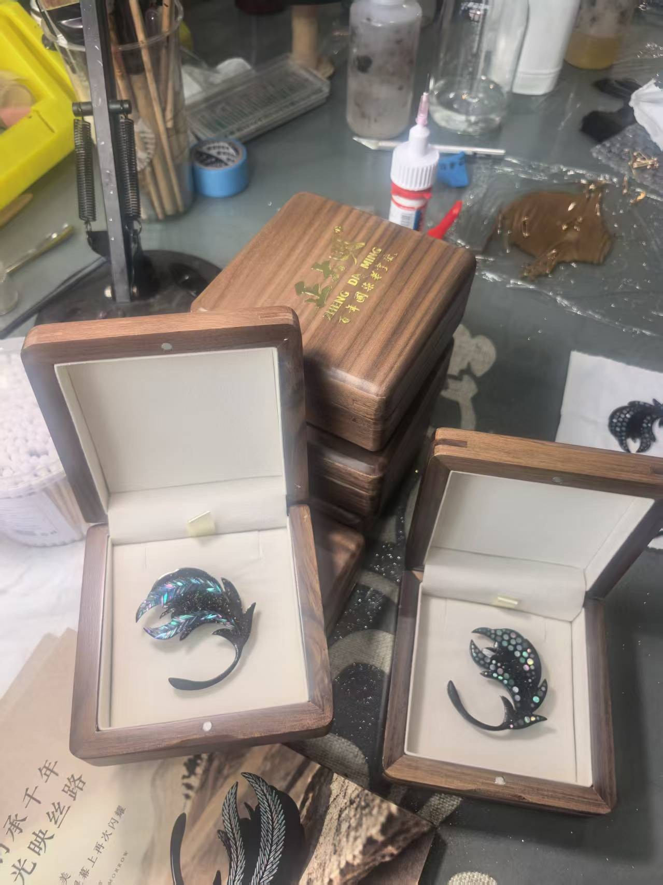

正大明为第十三届丝绸之路国际电影节定制的「光映丝路」大漆艺术胸针，以凤鸟回首展翼为造型，融合螺钿镶嵌与银粉大漆工艺，让千年中国漆艺与世界电影完成一次精妙对话。
一枚胸针能承载多少工艺？作为第十三届丝绸之路国际电影节指定供应商，正大明为电影节定制的「光映丝路」大漆艺术胸针，给出了一个极具东方韵味的答案：它要以千年大漆为骨，以螺钿为光，以数十道工序为注脚，方能别在嘉宾胸前，成为文明对话的微小却精致的载体。
设计之源：凤鸟回首，丝路延伸
胸针的设计主题为「丝路凤影·长安之光」。设计团队以凤鸟回首展翼的姿态为核心造型：凤首回望，象征文明的回望与传承；凤尾扬起，寓意丝绸之路的延伸与开放包容；羽毛线条如丝路道路，连接东西方文明；整体环抱成圆，象征相遇、交流与共融。与此同时，凤羽的流光溢彩又与电影胶片的光影变化形成呼应，使这枚胸针成为丝路文化与电影艺术的双重隐喻。


工艺之难：天然大漆的慢与独一无二
胸针以天然大漆为底胎，黄铜为胎骨，厚度仅约 0.8 厘米，尺寸约 5.5 厘米 × 4.5 厘米。在这样狭小的体量上，要完成多道髹涂、螺钿镶嵌、银粉铺设与手工打磨推光，每一步都考验着匠人的手上功夫与对时间的耐心。
大漆工艺的特殊之处在于「慢」。每一层漆都需要进入荫房等待干燥，干燥后的颜色会暂时偏沉，数月后才会自行「醒」回，越用越亮、越久越透。这意味着，一枚胸针从设计到成品，往往需要跨越季节。与之对应的是，每一枚胸针的漆面光泽、螺钿折射都不可完全复制，天然材料的随机性赋予了它独一无二的生命力。
两种方案：星河丝路与流光凤羽
设计草图中呈现了两种工艺方案。《星河丝路》以银粉大漆表现丝路大地与古道星尘，圆片螺钿点缀其间，象征星辰、城市与胶片光点，从长安出发，汇聚成光，照亮世界；《流光凤羽》则以螺钿丝根据羽毛走向满贴，形成流动的光影效果，每一根螺钿丝都像一道光，象征电影光影与丝路道路，汇聚成凤羽，展翅飞向未来。
佩戴之美：镜头前的流光
纸上的草图只是设想，胸前的佩戴才是答案。电影节期间，海外推广大使、评委会主席与「金丝路奖」最佳男演员等嘉宾将这枚胸针别在胸前亮相官方海报。大漆深邃的底色托住螺钿的流光，在镜头前呈现出与纸面完全不同的质感——它不夺目，却让人忍不住多看一眼；它安静，却把东方材料的高级感写在细节里。


幕后：从工坊到礼袋
一枚胸针在镜头前只有方寸，但在工坊里却是一条完整的流水线。在第十三届丝绸之路国际电影节开幕前，正大明团队完成了最后一轮质检、包装与交付：木质礼盒、丝质内衬、印有电影节标识的礼袋——每一个细节都要配得上嘉宾胸前的位置。


最终呈现在电影节嘉宾胸前的成品，正是这种东方材料语言与国际审美语境的融合：它既是一枚胸针，也是一件可以佩戴的微型漆画；既是对丝绸之路的致敬，也是中国漆艺走向世界的又一枚注脚。